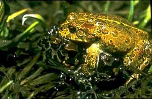

<body text="#000000" bgcolor="#FFFFFF" background="bg311.gif">

ЖАБА ИОСЕМСКАЯ (Bufo canorus) обитающая в горах Сьерра-Невада, может в известной мере поддерживать температуру тела на определенном уровне, греясь на солнце, когда холодно, и уходя в прохладную воду или под землю при высоких температурах окружающей среды. Животные ведут себя так, что температура их тела по возможности приближалась к верхней границе их температурного диапазона. У половины отловленных жаб температура тела была выше 24,5°, у очень немногих—выше 28,5°. Ниже 8° температура тела не была отмечена. Разница между температурой тела жабы и температурой субстрата в среднем составляет 3,2 . В 63% случаев температура тела жабы была выше или равнялась температуре почвы. В еще большей степени температура тела жабы превышает температуру воздуха. 